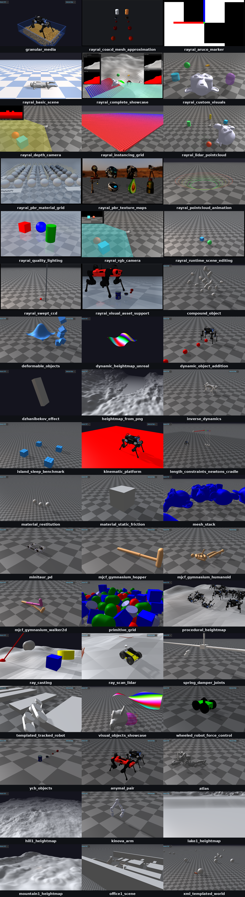

Examples
Overview
The raisim2Lib distribution ships prebuilt RaiSim and rayrai libraries
together with C++ example sources. Build the examples with CMake. The install
target does not copy the example executables, and the package does not include
a prebuilt TCP viewer: the rayrai_tcp_viewer target builds it from the
example sources.
The examples fall into three kinds:
Server examples, such as
primitive_grid, build araisim::Worldand publish it throughraisim::RaisimServer. View them withrayrai_tcp_viewer.Rayrai examples, such as
rayrai_pbr_material_grid, render in process withraisin::RayraiWindow.Non-visual tools and benchmarks, such as
model_asset_pipelineandarticulated_system_benchmark, print results or write files.
Together they cover the RaiSim physics APIs, mesh import and export, OpenUSD loading, and rayrai rendering and asset inspection. RaisimUnity and RaisimUnreal are no longer supported; see Legacy Integrations.


Run
After the top-level build from Build, Test, and Benchmark, run examples from the build tree:
./build-examples/examples/primitive_grid
./build-examples/examples/rayrai_pbr_material_grid
On Windows, the executables are in build-examples\bin:
.\build-examples\bin\primitive_grid.exe
If the runtime loader cannot find the shared libraries, set up the environment
before running examples. On Linux and macOS, raisim_env.sh sets
LD_LIBRARY_PATH or DYLD_LIBRARY_PATH:
source /path/to/raisim2Lib/raisim_env.sh
On Windows, CMake copies the runtime DLLs next to the executables. If a DLL is
still missing, add the package directories to PATH from PowerShell or from
the Command Prompt:
.\raisim_env.ps1
raisim_env.bat
Visualization modes
There are two visualization paths. See Visualization for the full workflow comparison.
RaisimServer examples
Server examples such as primitive_grid create a RaiSim world and publish it
through raisim::RaisimServer. They do not open a renderer window themselves.
Start the source-built viewer, then run the server example:
# Terminal 1
./build-examples/examples/rayrai_tcp_viewer
# Terminal 2
./build-examples/examples/primitive_grid
The default server port is 8080 unless the example changes it. Use this
path when you want to inspect the same simulation data that a normal
RaisimServer application publishes.
Rayrai examples
Examples such as rayrai_pbr_material_grid, rayrai_pbr_texture_maps, and
rayrai_visual_asset_support create or use a raisin::RayraiWindow
directly and render in process. They do not need the TCP viewer:
./build-examples/examples/rayrai_pbr_material_grid
Prefer these examples when you need camera images, GPU/offscreen rendering, PBR
materials, glTF visual import, or standalone rayrai feature inspection. USD
visual meshes can also be loaded through RayraiWindow::addVisualMesh; see
OpenUSD Loading for the importer scope.
Non-visual examples
Some examples print output or create files instead of showing a window.
model_asset_pipeline writes preprocessed and exported OBJ files to
raisim_model_asset_pipeline_example in the system temporary directory
(/tmp on Linux). articulated_system_benchmark and
anymal_standing_benchmark print timing results.
Example layout
The examples project groups targets by executable behavior:
Group |
Purpose |
|---|---|
Server examples |
RaiSim physics, contact, terrain, sensor, robot, XML/MJCF, and OpenUSD
scene workflows published through |
|
In-process rayrai renderer examples and the |
Benchmark examples |
Timing runs for articulated-system, contact, and sleeping-island workloads. |
Choosing an example
Start with these targets when learning a specific feature:
Target |
Demonstrates |
|---|---|
|
Basic rigid primitive creation and RaisimServer publishing. |
|
Mesh preprocessing, content-hash cache reuse, |
|
Loading an OpenUSD ShadowHand scene through |
|
Loading vetted NVIDIA Isaac Sim robot USD files with
|
|
Inspecting metallic-roughness PBR material behavior under rayrai. |
|
Rendering textured URDF visual meshes (OBJ/DAE with image textures) separately from their collision geometry. |
|
Visually comparing original meshes and CoACD convex approximation
parts generated through |
|
The TCP visualizer used by RaisimServer examples. |
|
Elastic suspensions, routed guides/pulley branches, and joint transmissions. See Tendon examples and Rayrai. |
|
Automatic tendon rendering with scene selection, pause/step/reset, and live transmission values. See Tendons. |
|
Actuators with motor operating regions (EM-MOR), linked from the URDF as actuator files, with live torque-speed plots for the twelve motors of a randomly actuated quadruped rig. See Rayrai Example: Motor Operating Region. |
|
Dense instanced vegetation on a heightmap with automatic mesh LOD, foliage wind and shadows, and asynchronous loading. See Rayrai Example: Forest for the required rayrai version. |
|
The same forest built from its saved RaiSim Engine |
|
A photoreal city of modular buildings, streets and parked cars loaded
from |
|
A photoreal warehouse of pallet racks, forklifts and a dock area loaded
from |
Targets without a dedicated page
These targets are built with the others but are documented only here or on a feature page:
Target |
Demonstrates |
|---|---|
|
432 boxes, spheres, capsules, and cylinders dropped onto a fractal heightmap. |
|
Twenty monkey meshes with triangle-mesh collision dropped one at a time onto a colored procedural heightmap. |
|
900 primitives and convex-hull meshes dropped onto a heightmap made of flat 0.4 m tiles. |
|
The |
|
Repeated ray queries against walls and pillars; see Ray Test. |
|
An authored glTF interior with its light sidecar and HDR environment,
described by |
Runtime assets
Some targets depend on bundled assets or platform runtime packages:
OpenUSD loading uses the package’s bundled OpenUSD runtime and USD files; keep the
openusdruntime directory andrscassets with the installed package.Rayrai examples require SDL2/OpenGL and rayrai runtime libraries. See Platform support for the OpenGL requirements and the reduced macOS feature set.
Poly Haven and PBR asset examples require the corresponding assets under
rsc. CMake copiesrscnext to the executables (build-examples/examples/rsc, orbuild-examples/bin/rscon Windows).rayrai_forestreads its assets fromrsc/forestin the configured checkout and writes regenerablerayrai_cache_*.lodsfiles beside them.rayrai_forest_from_rscenereadsrsc/forest/rayrai_forest.rscenefrom thersccopy next to the executables, and the scene references the same assets.rayrai_cityreadsrsc/city/rayrai_city.rscenefrom thersccopy next to the executables (--scenepicks another file). Its street trees are the forest’s, so it also needsrsc/forest.rayrai_warehousereadsrsc/warehouse/rayrai_warehouse.rscenethe same way. It reuses the city’s sky, asphalt and traffic cones, so it also needsrsc/city.rayrai_coacd_mesh_approximationwritesraisim_coacd_*cache files beside the YCB meshes in the build tree’srsccopy.
After building, list the example executables from the platform-specific output
directory. Linux and macOS builds place them under examples:
ls build-examples/examples/
Windows builds place them under bin:
Get-ChildItem .\build-examples\bin\*.exe
Benchmark Examples
Rayrai Tools And Examples
- Rayrai Example: Basic Scene
- Rayrai Example: Complete Showcase
- Rayrai Workflow: Blender Scene Import
- Rayrai Example: RGB Camera
- Rayrai Example: Depth Camera
- Rayrai Example: Heightmap Replacement
- Rayrai Example: LiDAR Pointcloud
- Rayrai Example: Aruco Marker
- Rayrai Example: Custom Visuals
- Rayrai Example: Instancing Grid
- Rayrai Example: Forest
- Rayrai Example: Pointcloud Animation
- Rayrai Example: PBR Material Grid
- Rayrai Example: PBR Texture Maps
- Rayrai Example: Nested Glass
- Rayrai Example: Quality Lighting and FXAA
- Rayrai Example: Visual Asset Support
- Rayrai Example: CoACD Mesh Approximation
- Rayrai Example: Runtime Scene Editing
- Rayrai Example: Rolling And Spinning Friction
- Rayrai Example: Motor Operating Region
- Rayrai Example: Swept CCD
- Rayrai Example: Forest From .rscene
- Rayrai Example: City
- Rayrai Example: Warehouse
- Rayrai Example: TCP Viewer
Server Examples
- Server Example: Compound Object
- Server Example: Deformable Objects
- Server Example: Dynamic Heightmap
- Server Example: Dynamic Object Addition
- Server Example: Dzhanibekov Effect
- Server Example: Granular Media
- Server Example: Heightmap From PNG
- Server Example: Inverse Dynamics
- Server Example: Kinematic Platform
- Server Example: Length Constraints Newton’s Cradle
- Server Example: Material Restitution
- Server Example: Material Static Friction
- Server Example: Mesh Stack
- Server Example: Minitaur PD
- Server Example: MJCF Gymnasium Hopper
- Server Example: MJCF Gymnasium Humanoid
- Server Example: MJCF Gymnasium Walker2d
- Server Example: Model Asset Pipeline
- Server Example: NVIDIA USD Robots
- Server Example: Object Lifecycle Stress
- Server Example: Primitive Grid
- Server Example: Procedural Heightmap
- Server Example: Ray Casting
- Server Example: Ray Scan LiDAR
- Server Example: Robotiq Gripper Mimic
- Server Example: Rscene Server
- Server Example: Sensor Suite
- Server Example: Shadow Hand USD Cube
- Server Example: Sim Control Demo
- Server Example: Sphere Drop
- Server Example: Spring Damper Joints
- Server Example: Strandbeest Closed Loops
- Server Example: Synchronous Server Update
- Server Example: Templated Tracked Robot
- Server Example: Visual Objects Showcase
- Server Example: Wheeled Robot Force Control
- Server Example: YCB Objects
- Server Example: ANYmal Pair
- Server Example: Atlas
- Server Example: Kinova Arm
- Server Example: Office1 Scene